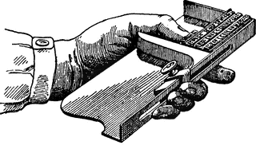

NEWSPAPERMEN
of COLUMBIA.
(AKA: Editors, publishers, typesetters, story writers.)
1850 - present

© Webmaster collection.
A tool (composing stick) of the 1850s.

George Washington "Wash" Gore produced The Columbia Star, for two issues Oct. 25 & Nov.
1, 1851. His inability to pay the balance of $370 for the historic old wooden Ramage letter press that he "purchased" from Dr. Lawrence C. Gunn of the Sonora Herald, lead to its vandalism. (an Ounce of gold was paid for the first issue by a local female. No known copies exsist today)
Thomas A. Falconer was born 1808 in North Carolina. In Columbia as Columbia Gazette editor in 1852 In Holly Springs, Mississippi by 1860-70.
His Wife was Sophronia L Falconer born 1819 in North Carolina
John Charles Duchow
and Tyron M. Yancey, a printer from Mississppi, took over
as editors in Nov. of 1853. Then
Robert J. Steele, a printer from
Mississippi, August 19, 1854 to October 15 1855(?) or to the end, (By
then it was merged with the Southern Mines Advertizer).
John Heckendorn (1854-57), W. W. H. Gist (1854-56) & Robert Wilson (1856-57)
During The Columbia Gazette's life it had competition from the Columbia Clipper (May 13, 1854 to May 1857)
This page is created for the benefit of the public by
Floyd D. P. Øydegaard.

Email contact:
fdpoyde3 (at) yahoo (dot) com
A WORK IN PROGRESS,
created for the visitors to the Columbia State Historic park.
© Columbia State Historic Park & Floyd D. P. Øydegaard.